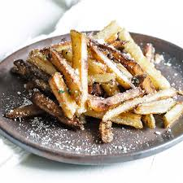

Truffle Fries

Description
These homemade truffle fries are taken to the next level with the addition of parmesan and truffle oil in this recipe. Once you try these, you won’t want a regular french fry again
Ingredients
- 1 3/4 pounds russet potatoes, peeled and cut into fries
- 2 tablespoons truffle-infused olive oil
- 1/2 teaspoon paprika
- 1 tablespoon grated Parmesan cheese
- 2 teaspoons chopped fresh parsley
- 1 teaspoon black truffle sea salt
Steps
- Place fries in a bowl. Cover with water and let soak for 30 minutes. Drain and pat dry.
- Preheat the air fryer to 400 degrees F (200 degrees C) according to manufacturer's instructions.
- Place drained fries into a large bowl. Add truffle olive oil and paprika; stir until evenly combined. Transfer fries to the air fryer basket.
- Air fry for 20 minutes, shaking every 5 minutes. Transfer fries to a bowl. Add Parmesan cheese, parsley, and truffle salt. Toss to coat.